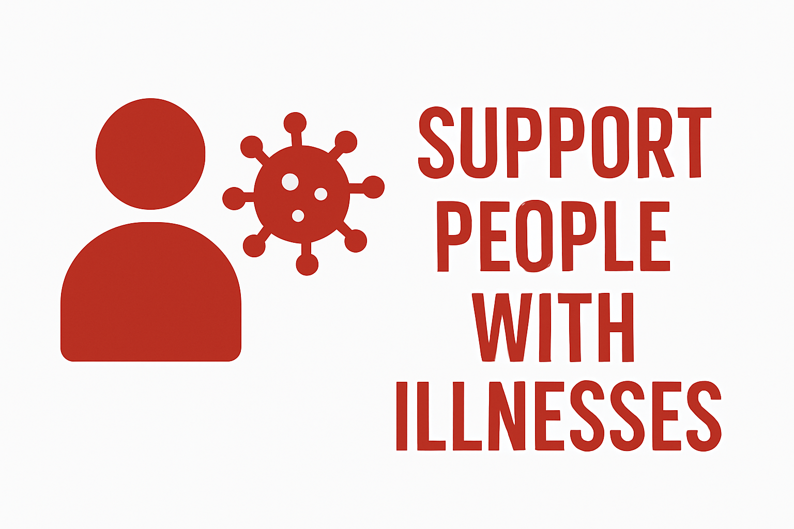

ASSISTENZA A PERSONE CON MALATTIE CRONICHE E MENTALI

ESSERCI QUANDO È PIÙ DIFFICILE
L'assistenza a persone con malattie croniche o mentali rappresenta una delle forme più impegnative ma anche gratificanti di volontariato sanitario. Richiede sensibilità, empatia e capacità di costruire relazioni significative con persone che affrontano sfide quotidiane nella loro salute.
AREE DI INTERVENTO
MALATTIE CRONICHE
Le persone con malattie croniche affrontano difficoltà quotidiane che possono compromettere la loro autonomia e qualità della vita. Il volontario può intervenire in diversi modi:
- Assistenza domiciliare
- Accompagnamento a visite mediche
- Supporto nelle attività quotidiane
- Monitoraggio dell'assunzione dei farmaci
- Attività ricreative e socializzanti
- Supporto ai familiari e caregiver
SALUTE MENTALE
Le persone con problemi di salute mentale necessitano di un supporto che va oltre l'assistenza sanitaria. Il volontario può:
- Favorire la socializzazione
- Partecipare a gruppi di auto-aiuto
- Organizzare attività ricreative e laboratoriali
- Offrire compagnia e ascolto attivo
- Supportare nel reinserimento sociale
- Collaborare con i centri di salute mentale
FORMAZIONE NECESSARIA
Per operare in questi ambiti è fondamentale una formazione specifica che prevede:
- Conoscenze di base sulle principali patologie croniche e mentali
- Tecniche di comunicazione efficace
- Gestione delle situazioni critiche
- Elementi di psicologia della relazione d'aiuto
- Supervisione periodica con professionisti
STRUTTURE DOVE PRESTARE SERVIZIO
Centri diurni
Comunità terapeutiche
Residenze sanitarie assistenziali
Centri di salute mentale
Associazioni di familiari
Assistenza domiciliare
La tua presenza può fare la differenza
Unisciti al nostro team e porta sostegno a chi ne ha più bisogno. Ogni gesto di cura conta.
Diventa Volontario per l'Assistenza